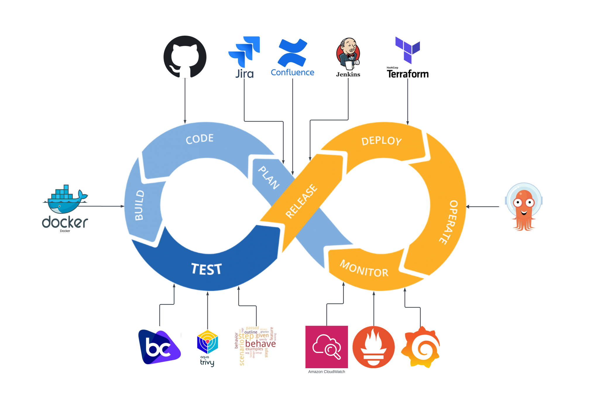
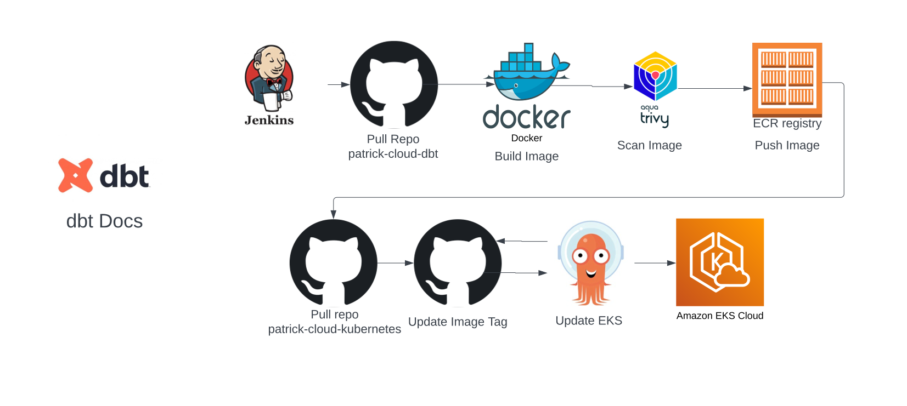
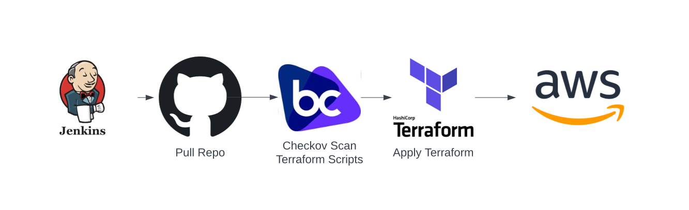

DevOps
Architecture

Architecture Decisions
- Plan - Jira and Confluence would be my preffered planning tools
- Code - Github is where the code is stored
- Build - Docker is used to build the images
- Test - Trivy, Checkov, Behave, Unit Testing
- Trivy scans the image for vunlerabilities
- Checkov scans the terraform code for vunlerabilities
- Behave performs end to end testing(Not used in this project)
- Unit Testing for SQL in dbt and any python application code(not used in this project)
- Release - Jenkins runs the build process for Terraform, Docker and Kubernetes
- Deploy - Terraform deploys the infrastructure to AWS
- Operate - Argo CD keeps the kubernetes cluster in sync with github
- Monitor - Cloudwatch, Prometheus & Grafana
- Cloudwatch logs events and has alarms to send emails
- Prometheus & Grafana provide a dashoboard for monitoring Kubernetes

Kubernetes Deployment
- Jenkins Pulls the image repo
- Docker builds the image
- Trivy scans the image
- Jenkins pushs the image to ECR
- Jenkins pulls the kubernetes manifest repo
- The manifest's image tag is updated in github
- Argocd periodically polls the github repo for changes and applies them to the cluster

Terraform Deployment
- Jenkins Pulls the Terraform repo
- Checkov scans the Terraform code for vulnerablilites
- Terraform applies the code to AWS
Jenkins Architecture Decisions
- Security - Jenkins EC2 server sits behind ALB in private subnet. Nginx is running on the server so traffic can be encrypted from the ALB to the Jenkins EC2 server.
- Alarms - The standard AWS alarms are applied to EC2. These alarms will also send an email when triggered.
- EC2 - Error log detection, High CPU, Low CPU